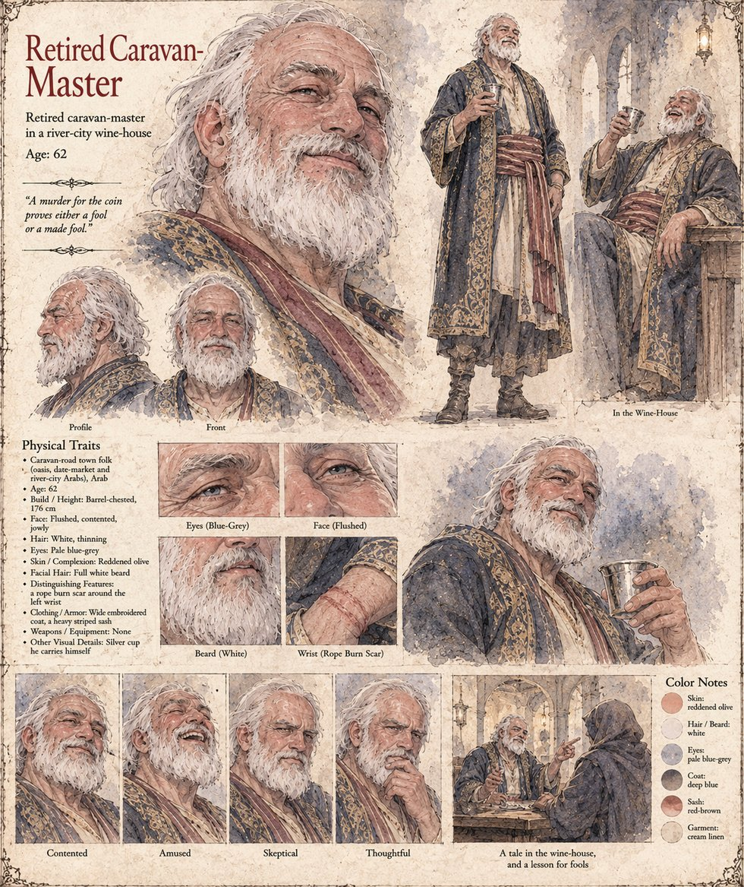

The Retired Caravan-Master
Retired caravan-master in a river-city wine-house · unnamed · holds forth that a murder for the coin proves a fool or a made fool · sixty-two by the sheet
A retired caravan-master in the river-city wine-house where Zaid is spending the coin he killed for, who holds forth that a murder for the coin proves either a fool or a made fool. Beside him the manuscript sets a spice-factor with a version of the legend of his own. The manuscript gives the caravan-master no name, age or description.
The sheet draws him barrel-chested and flushed, contented and jowly, with reddened olive skin, thinning white hair and a full white beard, pale blue-grey eyes and a rope-burn scar around the left wrist, in a wide embroidered deep-blue coat with a heavy red-brown striped sash over cream linen, with a silver cup in his hand. Its expression panels run contented, amused, skeptical and thoughtful; its views are captioned In the Wine-House and A tale in the wine-house, and a lesson for fools, and the sheet's pull-quote, A murder for the coin proves either a fool or a made fool, is the character list's own line for him. The age of sixty-two and everything visual are the sheet's.